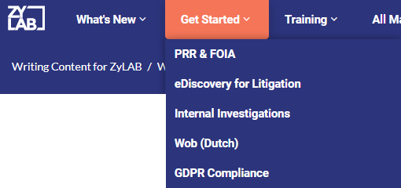
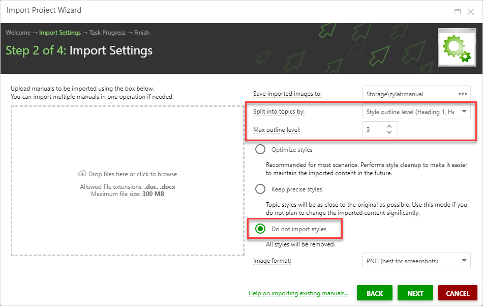
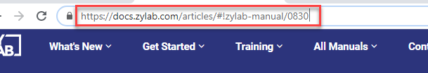

Writing for ZyLAB: Guidelines
This guide is intended to explain how to write content for ZyLAB, which eventually will be placed on the Documentation Portal. For example:
- use cases
See PRR & FOIA, eDiscovery for Litigation, Internal Investigations, etc.

- demoscripts
- onboarding material or
- any other content intended for the Documentation Portal
Do not focus on our features (we have already described our features), focus on the goal(s) your users want to reach. We want you to add your expertise/knowledge to our existing content. Who are you writing for? Is it for one group of users, or are there more groups? What is the jargon they use in their daily work? Use that language. Explain why our features are important to your users. What is their normal workflow and how can they keep that workflow in ZyLAB ONE (or do they need to change their usual workflow)? Etc. etc. Use the topics we already have and make it personal for your users.
Tip: If you tell me which topics from the Documentation Portal you want to include in your own manual/use case, I can publish them for you in a Word document. Then you can use that Word document as your starting point to add your own content. If you want to change something in the existing content, notice outdated information or think something is not clearly described, please let me know.
Important: Turn on track changes before adjusting the Word document. That way I can see what was changed. Carefully read the section below on Version Control.If you want to use only a part of an existing topic, please read Parts of Topics.
Important: Do not change the content in the existing topics yourself. Add your own content only before/after existing topics. You can also add your own chapters/topics, but first check if it is not already described.
Guidelines when writing in Word
-
When writing in Word, you create chapters with headings. On the Documentation Portal, chapters are converted to topics.
See the screenshot below on how a Word document is imported into Clickhelp (the application we use to create the Documentation Portal).

For each new (sub)chapter in your Word document, use a Heading.
Use at a maximum: Heading 1, Heading 2 and Heading 3. Headings allow you to make subtopics.
Look at the Documentation Portal and see the topics with their subtopics. That is how it will look for your content.
-
Do not waste time adding your own styles. As you can see in the screenshot above, styles will not be imported. Just use the standard styles available in Word.
-
Do not use tables or boxes around text. It will not be imported correctly.
- Use the text font Roboto. If you do not have that font available, follow these steps: https://www.maketecheasier.com/use-google-roboto-font-everywhere/
-
Do not add screenshots with your own numbers stamped on it.
-
Deliver screenshots/images in a separate folder in Teams. This prevents images from appearing blurred on the Documentation Portal. Make sure all images you deliver are sharp. Save images/workflows as png.
-
Do not use colored text.
- Do not use formal language like firstly/secondly, thus, whilst, aforementioned, etc. Keep it simple.
-
Do not use any kind of formatting except bold, italic and underline.
-
Bold or Italic: When you want to emphasize something.
-
Underline: When you want that piece of text to be a link to another topic.
- IMPORTANT: Share/Save your Word file in your own folder on Teams. I can download all content from there.
Make a separate folder for each subproject you work on. Include all images/screenshots/workflows (png files) there separately. Very important, all screenshots should be delivered as separate images! And no text, boxes, numbers added to it! If you do want numbers added to it, do that in your Word file, but make sure the original screenshot is also available in Teams.
Version Control
Version control is very important! You will probably share what you write for feedback. When sharing your content, the document is more readable when track changes are included/turned off again. However, in doing so, those changes are gone. So make sure the first version with track changes is saved and create another version in which the track changes are included. For example, like this:
Word File 01 Track Changes (+ initials/name of person who made the track changes)
Word File 02
Word File 03 Track Changes
Word File 04
Make sure all versions are available in Teams.
Re-use content: Single Sourcing
Single sourcing is the re-use of existing written content instead of rewriting information. This ensures consistency. Also, it helps with maintaining the content. When a feature of ZyLAB ONE is updated, the manuals and all use cases need to be updated. It saves a lot of time, if this only needs to be done once (and not go through and update all separate manuals/use cases where that feature is described too). So, very important not to explain features in your own words. If you think some features are not cleary described, please let me know. Feedback is very much appreciated.
All topics on the Documentation Portal can be re-used. Indicate it like this:
insert: 'https://docs.zylab.com/articles/#!zylab-manual/0830'
Copy the url from the address bar:

It is important to know that you can also re-use parts of topics.
Videos can also be re-used.
Add your own content in front or behind the content you are re-using.
This topic is a good example of how that looks:
https://docs.zylab.com/articles/#!internal-investigations/315
Here you can see the topic that was re-used:
https://docs.zylab.com/articles/#!zylab-manual/2060
Please note that links are also re-used. You cannot add your own links to a topic that is re-used.
You can add your own links to your own content, but only in front or behind a re-used topic.Workflows
You might want to add workflows like shown in these topics:
https://docs.zylab.com/articles/#!datasubjectaccessrequests/003
https://docs.zylab.com/articles/#!wob/303001
Use a free
online tool to create such workflows. For example, Canva. The important thing here is to use the ZyLAB colors.
If you use another tool, make sure that you can work with the font Roboto (Google font) and can adjust the color codes.
Important: Explain what the purpose of a workflow is. If it is used as a Table of Contents, make sure users will recognize it as such. So, the topics should then match the workflow.
Directives- Use Roboto as the text font, color white.
https://www.maketecheasier.com/use-google-roboto-font-everywhere/ - Use for blue the color code #2C347C
- Use for orange the color code #F57558
- For grey, use color code #D9D9D9
- Include image in Word, but also as a separate image (png, not jpg or any other format).
- Do not use gradient or any other fancy lay out options.